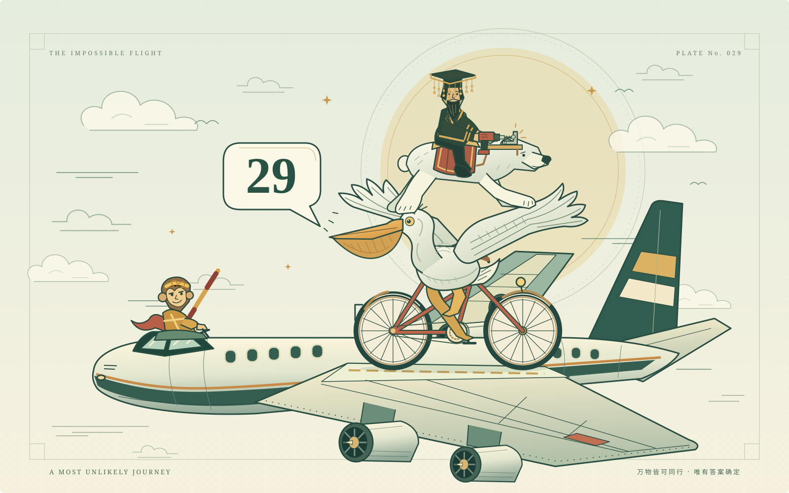

云端，一切皆有可能。
一只鹈鹕、一辆自行车，和一场不按常理出牌的飞行。
THE IMPOSSIBLE FLIGHT — 029

云端奇航孙悟空掌舵，鹈鹕骑行，始皇帝继续赶工。

29颗风很大，
风很大，
但答案很确定。
鹈鹕喊出的不是随机数字。
这是让两种口味、两种形状
必然相遇的最小数量。
为什么是 29？
反过来想：最多取出多少颗，仍然可以避开所有符合要求的组合？
圆形苹果 × 五角星桃子最多保留 max(7, 6) = 7 颗
五角星苹果 × 圆形桃子最多保留 max(7, 9) = 9 颗
西瓜味不参与配对可以全部取出 8 + 4 = 12 颗
7 + 9 + 12 = 28 → 再取一颗，必然配对。
28 颗的反例：7 颗圆形苹果 + 9 颗圆形桃子 + 12 颗西瓜。苹果和桃子全是圆形，仍不满足要求。因此最少需要 29 颗。
展开完整题目与数量表
在一个黑色的袋子里放有三种口味的糖果，每种糖果有两种不同的形状（圆形和五角星形，不同的形状靠手感可以分辨）。现已知不同口味的糖和不同形状的数量统计如下表。参赛者需要在活动前决定摸出的糖果数目，那么，最少取出多少个糖果才能保证手中同时拥有不同形状的苹果味和桃子味的糖？（同时手中有圆形苹果味匹配五角星桃子味糖果，或者有圆形桃子味匹配五角星苹果味糖果都满足要求）
| 形状 | 苹果味 | 桃子味 | 西瓜味 |
|---|---|---|---|
| 圆形 | 7 | 9 | 8 |
| 五角星形 | 7 | 6 | 4 |
按随机取出、不依据形状筛选或放回的最坏情况保证计算。